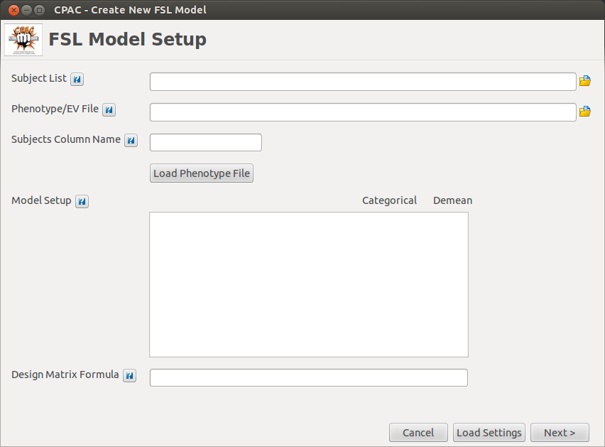

FSL Group Analysis¶
Overview¶
C-PAC uses FSL/FEAT to compare findings across groups.
Users create a model file that includes group, phenotypic, and nuisance regressors for each subject, and the data is run through a General Linear Model (GLM) based on pre-defined comparisons (contrasts).
The following links provide an introduction to how groups are compared using FSL, as well as how to define contrasts.
Configuring CPAC to Run FSL Group Analysis¶

- Number of Models to Run Simultaneously:This number depends on computing resources. Choose how many models to run at the same time (parallelization).
- Select Derivatives: Select which derivatives you would like to include when running group analysis. When including Dual Regression, make sure to correct your P-value for the number of maps you are comparing. When including Multiple Regression SCA, you must have more degrees of freedom (subjects) than there were time series.
- Models to Run: Use the + to add FSL Models to be run (or to create new models).
- Models Contain F-tests: Set this option to True if any of the models specified above contain F-tests.
- Z Threshold: Only voxels with a Z-score higher than this value will be considered significant.
- Cluster Significance Threshold: Significance threshold (P-value) to use when doing cluster correction for multiple comparisons.
- Run Repeated Measures: Run repeated measures to build within-subject models or compare different scans (must use the group analysis subject list and phenotypic file formatted for repeated measures - more details below listed under 'Subject List' and 'Phenotype/EV File').
Specifying Models to Run¶

- Subject List: Full path to a list of subjects to be included in the model. This should be a text file with one subject per line. Tip 1: A list in this format contaning all subjects run through CPAC was generated along with the main CPAC subject list (see subject_list_group_analysis.txt). Tip 2: An easy way to manually create this file is to copy the subjects column from your Regressor/EV spreadsheet.
- Phenotype/EV File: Full path to a .csv file containing EV information for each subject. Tip: A file in this format (containing a single column listing all subjects run through CPAC) was generated along with the main CPAC subject list (see template_phenotypic.csv).
- Subjects Column Name: Name of the subjects column in your EV file.
Note for repeated measures/within-subject models:
An additional group analysis subject list and phenotype file template are generated when you create your subject list, and are pre-formatted for use in repeated measures/within-subject models - these versions are to be used if you enable Repeated Measures in the pipeline configuration editor. These will have 'repeated_measures' in their filenames.
An additional group analysis subject list and phenotype file template are generated when you create your subject list, and are pre-formatted for use in repeated measures/within-subject models - these versions are to be used if you enable Repeated Measures in the pipeline configuration editor. These will have 'repeated_measures' in their filenames.
Upon populating these fields and clicking "Load Phenotype File", your model builder will look something like this:

- Model Setup: A list of EVs from your phenotype file will populate in this window. From here, you can select whether the EVs should be treated as categorical or if they should be demeaned (continuous/non-categorical EVs only). 'MeanFD' and 'Measure Mean' will also appear in this window automatically as options to be used as regressors that can be included in your model design. Note that the MeanFD and mean of measure values are automatically calculated and supplied by C-PAC via individual-level analysis.
- Design Matrix Formula: Specify the formula to describe your model design. Essentially, including EVs in this formula inserts them into the model. The most basic format to include each EV you select would be 'EV + EV + EV + ..', etc. You can also select to include MeanFD and Measure_Mean here. Note that this design formula is pre-generated for the user depending on the EVs in the phenotype file, but can be edited at any time. C-PAC uses the Python library Patsy to generate the design matrices, so more information on how to format your design formula for specific designs can be found here- Patsy formula documentation
Note: MeanFD and Measure_Mean values are automatically demeaned prior to being inserted into the group analysis model.
Note: Including interactions in your design is not possible at this time. This will be included in the upcoming release shortly.
Note: Including interactions in your design is not possible at this time. This will be included in the upcoming release shortly.
Upon making your selections and clicking "Next", you will see this screen:

- Contrasts: Specify your contrasts in this window. When the model builder builds the design matrix, it will process the categorical variables appropriately and provide the names of the different levels available as contrast labels, listed under 'Available Contrasts'. The contrast operators available right now include:
- > Greater than
- < Less than
- + Positive
- - Negative
- Model Group Variances Separately: Specify whether FSL should model the variance for each group separately. If this option is enabled, you must specify a grouping variable below.
- Grouping Variable: The name of the EV that should be used to group subjects when modeling variances. If you do not wish to model group variances separately, set this value to None.
- Model Name: Specify a name for the new model.
- Output Directory: Full path to the directory where CPAC should place the model files (.mat, .con, .grp) and the outputs of group analysis.

Table Of Contents
- Installing C-PAC
- Using C-PAC
- Data Preprocessing
- Outputs and Measures
- Data Output
- Preconfigured Files
- Troubleshooting and Help
- Release Notes
- Benchmark Package
An open neuroscience project brought to you by: